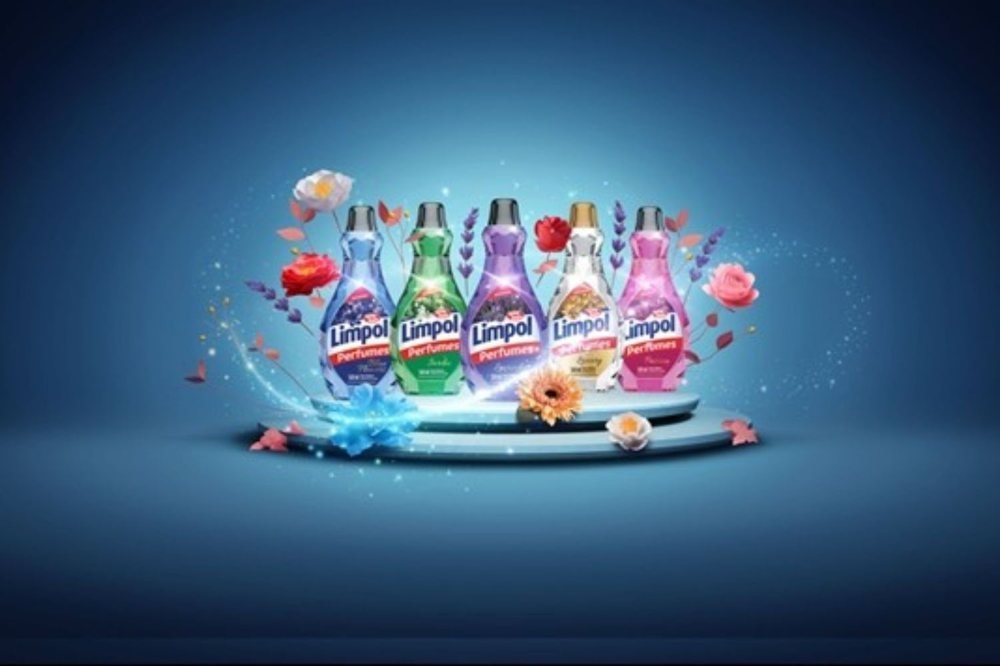
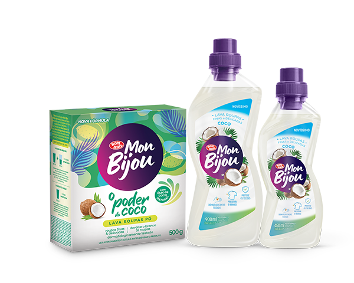
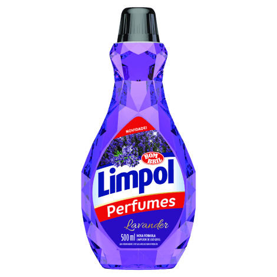
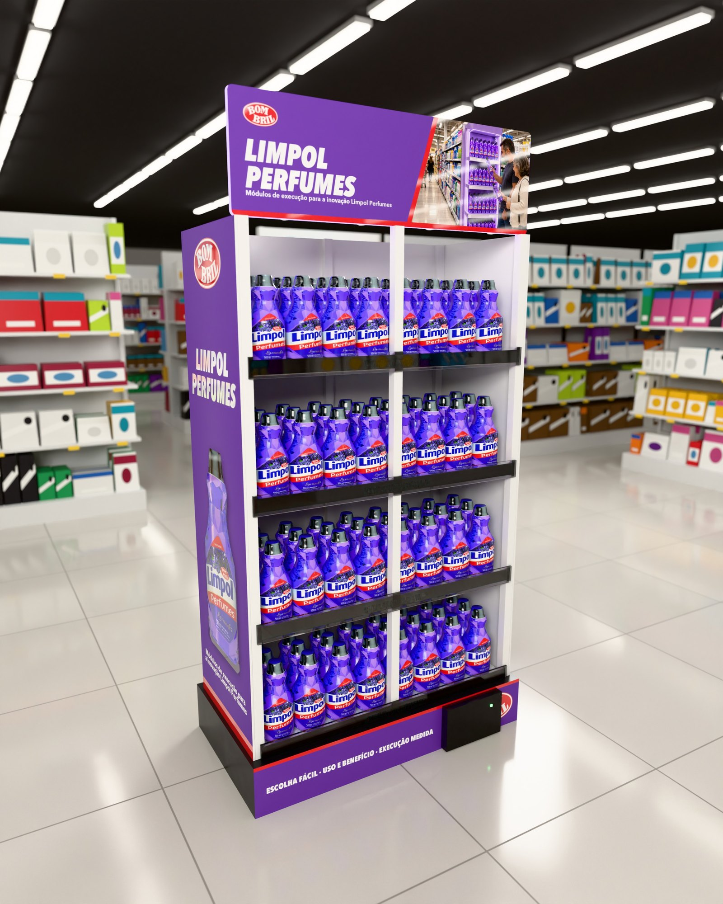
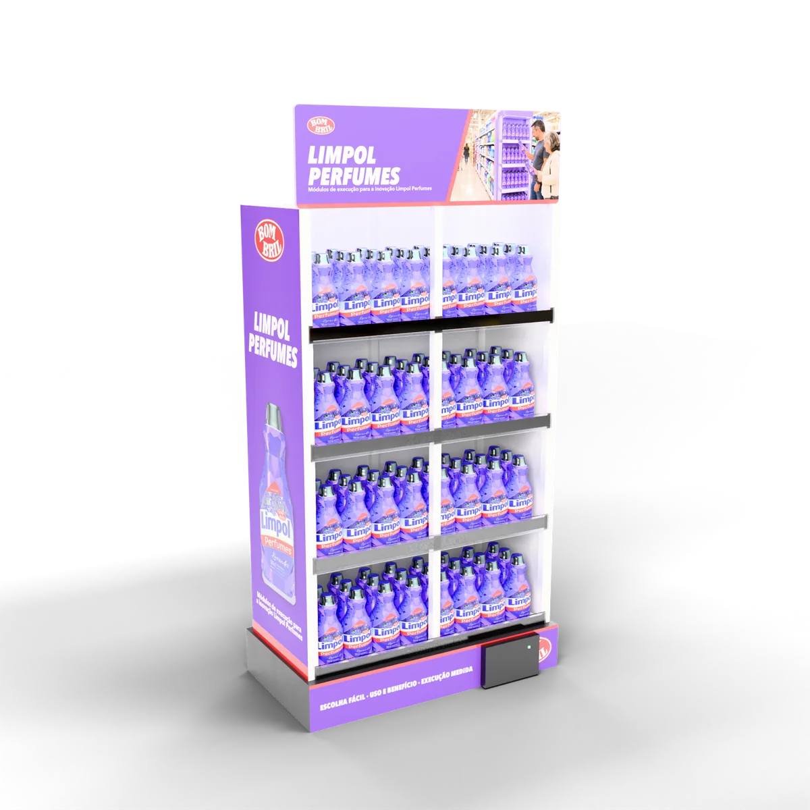
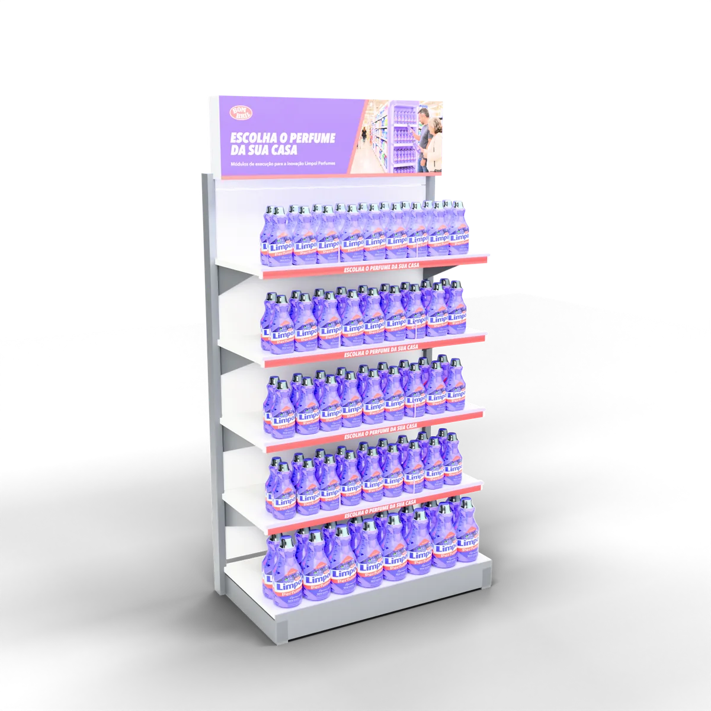
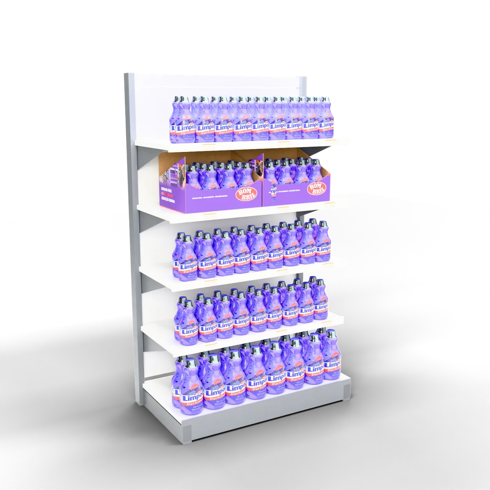

Um piloto para a inovação Limpol Perfumes chegar à gôndola, ser escolhida pelo shopper e ser medida loja a loja.
Quem somos
Os dois lados do balcão.
A 75 LAB nasceu da soma de quem opera a loja e de quem pensa a marca na indústria. Mais de 15 anos vivendo a distância entre a intenção comercial e o que acontece no canal.
Caique Becker
Cofundador e Head de Trade. Veio do varejo: layout, execução e a régua de aprovação do que a indústria propõe.
Daniel Coimbra
Cofundador e CEO. Veio da indústria: lançamento, gestão de categoria e estratégia comercial que vira venda.
Estratégia de PDVDisplays e produçãoRastreio por QRAR e vitrine virtual
Nosso diferencial
Quem desenha a peça já teve de aprová-la, instalá-la e cobrá-la.
Vivemos o trade
Falamos a língua de quem decide: margem, giro e positivação.
Solução que cabe numa frase
Entregável físico, escopo fechado e em ondas. Vira ativo da marca, com começo, meio e fim.
PDV mensurável
Plano de rastreamento One Shot e On Timing em cada peça.
Plataformas próprias
Ariuno, Códice, LAB2WIN e BE2WIN para gestão, displays inteligentes e planejamento de trade.
Marcas que confiam na 75 LABPancoLactalisNestléSearaAlltak
Capítulo 1
01
Leitura: a inovação já tem prioridade.
Antes de propor, o que os números públicos dizem e o que ainda ninguém mediu.
01 Leitura02 Estratégia03 Solução04 Execução e medição
Leitura do desafio
+8,2%
receita líquida em 2025
+6,5%
volume vendido em 2025
A inovação cresceu. O desafio é fazê-la girar em cada loja.
Problema aparente
Conquistar distribuição para lava-roupas e limpadores perfumados.
Problema real
Fazer o shopper reconhecer, comparar e escolher a inovação na gôndola, e a marca saber onde isso acontece.



Fonte: Bombril Relações com Investidores, Press Release 4T25, exercício de 2025. Imagens dos sites oficiais Bombril e SuperHiper, consulta em 20/10/2026.
Mercado
A categoria cresce devagar. Quem ganha espaço é quem explica o valor.
-0,2%
+3,9%
Produção 2025Projeção 2026
Eficiência e experiência sensorial guiam a evolução dos produtos de limpeza.
Leitura da Worldpanel para 2026: limpeza que funciona e que também entrega sensação. É o território do perfume.
Cuidado ao usar os números. Produção física do setor não é venda ao consumidor, e a projeção de 2026 não é resultado realizado.
Fontes: ABIPLA com dados FGV IBRE, 29/09/2026 (produção física do setor de produtos de limpeza); Worldpanel by Numerator, 10 tendências do consumo em 2026, 04/02/2026.
Concorrência
O território do perfume já é disputado. Perfume sozinho não diferencia.
Ypê
Renovou os limpadores perfumados em setembro de 2025, incluindo a fragrância Chá Branco.
Renovação de linha
Veja
Separa Perfumes de Aroma Sense, esta com proposta mais premium e óleos essenciais, segundo a fabricante.
Duas camadas de linha
Limpol Perfumes
Renovação anunciada em março de 2025, com cinco fragrâncias e embalagem inspirada em diamante.
Espaço a ocupar: escolha guiada
A execução precisa tornar Limpol reconhecível, explicar o uso e dar razão para escolher.
Fontes: Ypê, comunicação oficial, set/2025; Veja, site oficial, consulta em 20/10/2026; SuperHiper/ABRAS, 17/03/2025. Alegações são das fabricantes; não há comparação de eficácia.
Shopper
O shopper decide em quatro perguntas. A gôndola precisa respondê-las.
1
O que é e para que serve?
Categoria, uso e benefício em poucas palavras.
Ponta Prisma
2
Qual fragrância?
Navegação visual entre as variantes escolhidas.
Régua de Escolha
3
Qual formato levar?
Hierarquia entre tamanhos, com o preço legível.
Régua + Caixa Prisma
4
Quero conhecer o aroma?
Experiência olfativa opcional, só se aprovada pela Bombril.
Variante opcional
Leitura da 75 LAB a partir do material público da Bombril, a validar no diagnóstico em loja. Sem dado primário de shopper neste momento.
Capítulo 2
02
Estratégia: um módulo de execução ligado a uma prioridade.
Trade e marketing se somam no mesmo metro quadrado da loja.
01 Leitura02 Estratégia03 Solução04 Execução e medição
Estratégia de trade
Trade: começar onde há dado, expor com clareza, repor com disciplina.
01
Canal e rede
Uma rede ou região com histórico por loja e SKU. Supermercado e atacarejo conforme onde a distribuição já existe.
02
Exposição
Ponta autorizada, régua de escolha na gôndola e caixa para loja compacta. Embalagens sempre visíveis.
03
Sortimento e preço
Só os SKUs cadastrados e abastecidos na rede escolhida. Preço legível e condição comercial da loja respeitada.
04
Execução e régua
Instalação com evidência, treino curto e rotina de reposição junto às equipes regionais. Sucesso definido antes de começar.
Fonte: Bombril, site oficial, Trade Regionais (atendimento a atacadistas, distribuidores e varejistas), consulta em 20/10/2026.
Estratégia de marketing
Território criativo para desenvolver com a Bombril
Escolha o perfume da sua casa.
Mensagem
Identifica o limpador e o benefício, e coloca a fragrância como critério de escolha.
Conteúdo no celular
QR na peça leva ao guia de fragrância e de uso, com o evento medido.
Integração
Reaproveita os aprendizados da Blitz Bombril e da promoção 1001 Prêmios, sem concorrer com as agências atuais.
Fontes: Propmark, 20/02/2026 (campanha de Carnaval com Sotaq e Movin e Blitz Bombril em PDVs); Bombril, promoção oficial 1001 Prêmios Pra Você, encerrada em 14/08/2026.
Capítulo 3
03
Solução: escolher, entender e comprovar.
Três peças para três tamanhos de loja, todas com leitura de resultado.
01 Leitura02 Estratégia03 Solução04 Execução e medição
Reveal da solução
O reveal
A inovação na altura do olho, com a escolha facilitada.
EscolherEntenderComprovar
Ponta autorizada no fim da gôndola, frascos à frente, luz de borda e QR para provar a instalação.
Peça 1 · Ponta Prisma
Ponta Prisma: a inovação ganha endereço certo e se identifica sozinha.
80 x 170 x 40 cmMetal pintadoVerniz localizadoSensor Códice
O que é
Ponta de gôndola modular, com frente em facetas de diamante e testeira Bombril trocável por campanha.
Como funciona
Encostada no fim da linha de limpeza. O sensor Códice na base conta presença e reposição. O QR da lateral registra a instalação: loja, data, hora e GPS.
Racional
A inovação precisa ser vista antes de ser escolhida. A ponta concentra a linha num ponto de visita certa e dá à marca um único lugar para medir.
Benefícios
Marca: identidade e dado de reposição.
Varejo: módulo limpo e fácil de repor.
Shopper: a linha reunida num só lugar.
Veja as três peças em 3D e realidade aumentada no seu celular. Abrir a página de AR


Medidas da peça: especificação do enxoval proposto. Frasco de referência: Limpol Perfumes Lavander 500 ml; as medidas finais seguem a embalagem vigente.
Peça 2 · Régua de Escolha

Régua de Escolha: a gôndola ensina qual perfume levar.
90 x 190 x 40 cmAcrílico jateadoSoft touchLuz de borda
O que é
Módulo de gôndola com divisórias de acrílico jateado por fragrância e uma testeira com o benefício do produto.
Como funciona
Cada divisória tem a cor e o nome da fragrância e a hierarquia entre formatos. A luz de borda guia o olhar. O QR leva ao guia de fragrância e uso.
Racional
Perfume sozinho não diferencia. A régua transforma escolha em três decisões simples: fragrância, formato e preço.
Benefícios
Marca: clareza entre variantes.
Varejo: gôndola organizada, menos ruptura.
Shopper: escolha rápida, sem esforço.
Medidas da peça: especificação do enxoval proposto. A régua só exibe as variantes cadastradas e abastecidas na rede do piloto.
Peça 3 · Caixa Prisma
Caixa Prisma: a loja pequena também recebe a inovação exposta e comprovada.
40 x 26 x 30 cmPapelão BCCorte especialQR único na aba
O que é
Caixa de embarque que abre no picote e vira bloco de marca na prateleira, sem montagem.
Como funciona
O repositor abre no picote e escaneia o QR da aba: a marca recebe loja, hora e foto. A face interna conta o benefício.
Racional
Loja compacta e atacarejo nem sempre têm ponta livre. A inovação chega exposta e a entrada na loja fica provada.
Benefícios
Marca: prova de entrada loja a loja.
Varejo: reposição rápida, nada para montar.
Shopper: bloco da marca fácil de achar.

Medidas da peça: especificação do enxoval proposto. A face interna e o corte final dependem da aprovação do manual de embalagem da rede.
Plano de rastreamento 75 LAB
Cada peça deixa rastro: da instalação ao produto que acabou.
Peça
→
Captação
→
Transmissão
→
Plataforma
→
Dados
→
Insights
→
Decisão
One Shot
O que é
O registro da instalação de cada peça, pelo QR Code da própria peça.
Como funciona
Quem instala escaneia o QR e fotografa a peça montada. O sistema grava loja, data, hora e GPS no painel de instalações.
Benefício
A Bombril sabe, loja a loja, que a peça entrou, onde e quando, sem auditoria presencial, e cobra o que não foi instalado.
On Timing
O que é
O acompanhamento da peça durante a campanha, com sensor Códice na Ponta Prisma.
Como funciona
O sensor envia sinal à plataforma. O painel mostra onde a peça está, há quanto tempo, se saiu do lugar e se o produto acabou, e avisa.
Benefício
A peça não some nem fica vazia sem ninguém saber. A marca reforça onde vende e corta onde não funciona.
Fonte: plano de rastreamento da 75 LAB. O On Timing com sensor se aplica às peças com módulo Códice; Régua e Caixa usam o One Shot.
Capítulo 4
04
Execução e medição: provar antes de ampliar.
Um piloto de doze semanas, com critério de decisão combinado antes da instalação.
01 Leitura02 Estratégia03 Solução04 Execução e medição
Piloto
Trinta lojas em três grupos mostram o que gera resultado adicional.
10
Grupo A · execução habitual
O que acontece no período sem o novo módulo.
10
Grupo B · módulo de comunicação e exposição
A nova execução melhora a venda e a contribuição?
10
Grupo C · mesmo módulo com experiência olfativa aprovada
O aroma acrescenta resultado suficiente para pagar a operação?
Lojas agrupadas por rede, formato, região e histórico, com sorteio dentro de cada bloco. Se o volume por loja for baixo ou o aroma não estiver pronto, começamos com dois grupos.
Desenho inicial para discussão. Trinta lojas é uma referência de escopo, não uma amostra estatística já calculada; ajustar após observar o giro e a variação entre lojas.
Cronograma
12 semanas do diagnóstico à decisão.
Semanas 1 e 2
Diagnóstico
Marco: escopo aprovadoEscolha dos SKUs, dados e autorizações da rede.
Semanas 3 e 4
Desenho e instalação
Marco: produção e instalaçãoProtótipo validado, logística e evidência fotográfica.
Semanas 5 a 10
Seis semanas ativas
Marco: medição contínuaSell-out, reposição e execução por loja, com os três grupos comparados.
Semanas 11 e 12
Leitura e decisão
Marco: decisãoAmpliar, ajustar ou encerrar, pelo critério combinado.
Antes: 4 a 8 semanas de histórico já existente servem de referência, sem acrescentar espera.
Prazo de referência para discussão. Produção e aprovação técnica podem exigir ajuste do prazo total.
Indicadores e próximos passos
Giro, mix, execução e economia no mesmo relatório.
Venda adicional
Sell-out dos grupos contra histórico e controle, em unidades e litros.
Base: histórico 4 a 8 sem. · Meta: a combinar com a Bombril
Portfólio e mix
SKUs ativados e produtos próximos, para ver transferência e crescimento líquido.
Base: histórico por SKU · Meta: a combinar
Qualidade da execução
Material instalado, preço legível, reposição e dias de funcionamento.
Base: auditoria do diagnóstico · Meta: a combinar
Economia
Contribuição adicional menos custos do projeto, com premissas validadas pela área financeira.
Base: dados de margem da Bombril · Meta: a combinar
Para sair da reunião de 27/10
Uma inovação e uma rede prioritárias.
Um interlocutor de trade ou comercial na Bombril.
Dados mínimos e escopo do diagnóstico.
Próxima onda: lava-roupas, com o mesmo módulo e o mesmo rastreio por QR.
Qual inovação e qual rede vocês escolheriam para construir esse teste conosco?
Resultado esperado, não resultado real: sem dados internos de venda, não prometemos ganho percentual. Seis semanas não comprovam recompra duradoura. Metas e responsáveis combinados com a Bombril até o fechamento do diagnóstico.
75 LAB ESTRATÉGIA, DESIGN E PRODUÇÃO LTDA CNPJ 55.470.982/0001-77 CENU · Centro Empresarial das Nações Unidas, Torre Norte Av. das Nações Unidas, 12.901, Brooklin, São Paulo, SP, CEP 04578-910 (11) 8864-8434 · WhatsApp (11) 98676-5634 contato@75lab.com.br · 75lab.com.br · Instagram @setecincolab
Caique Becker · cofundador e Head de Trade caique.becker@75lab.com.br